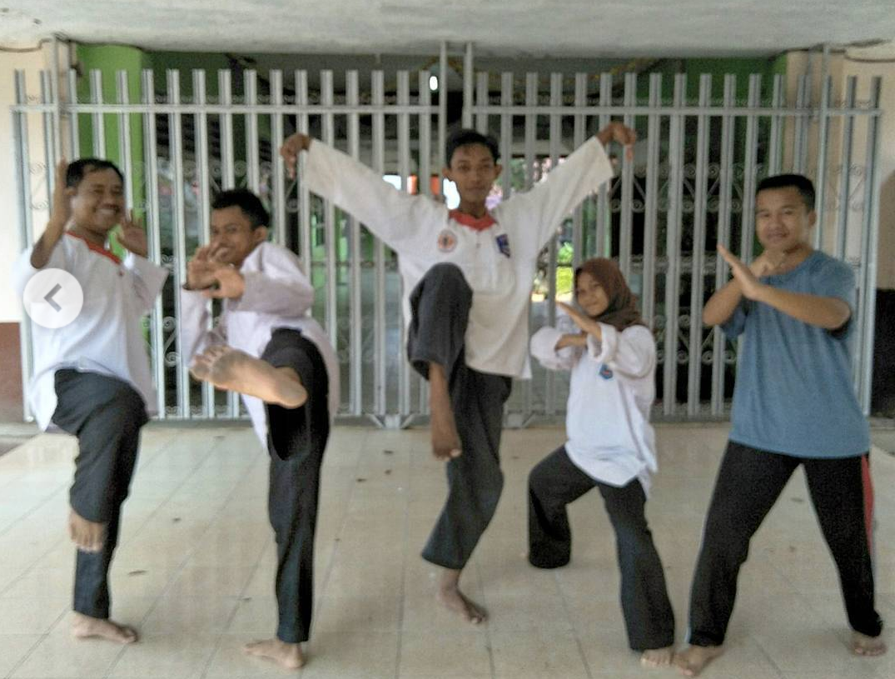
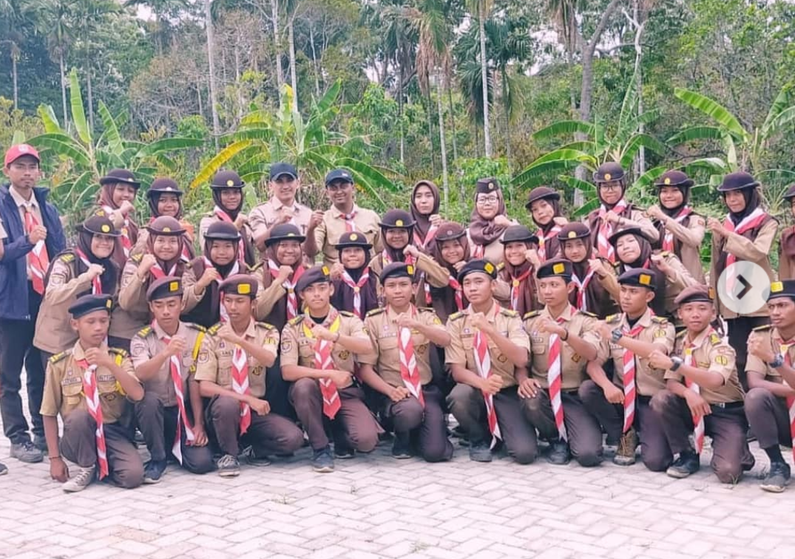
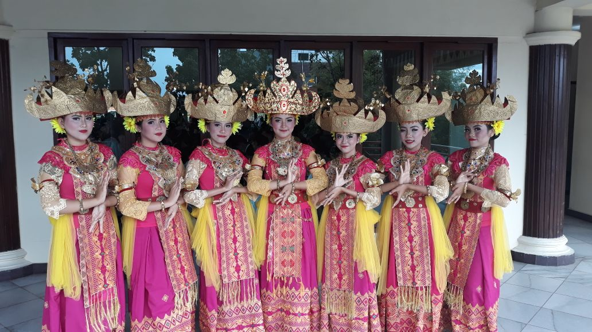
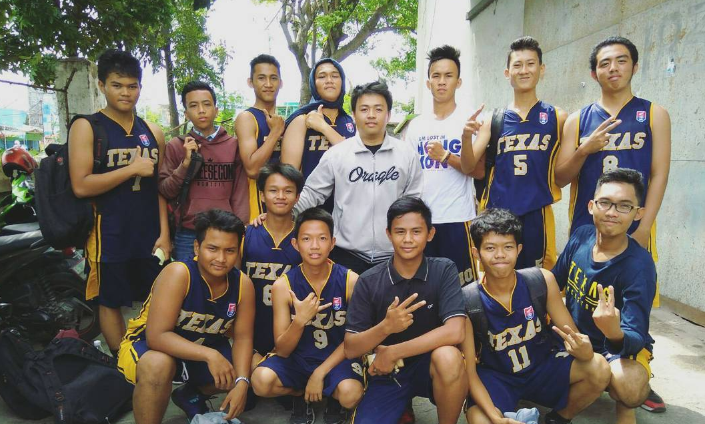
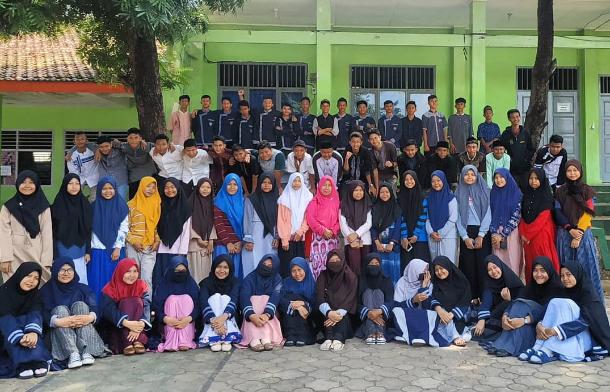
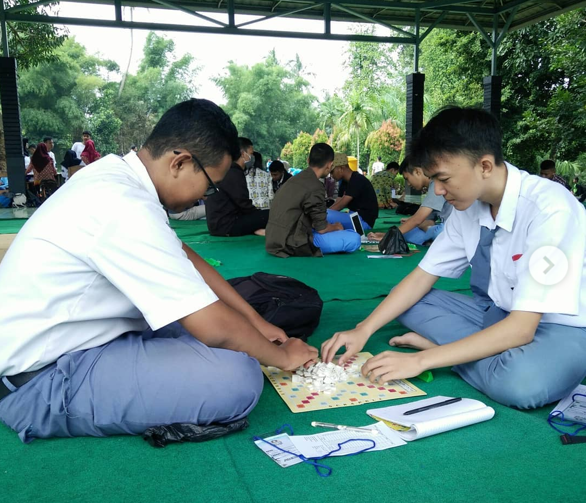
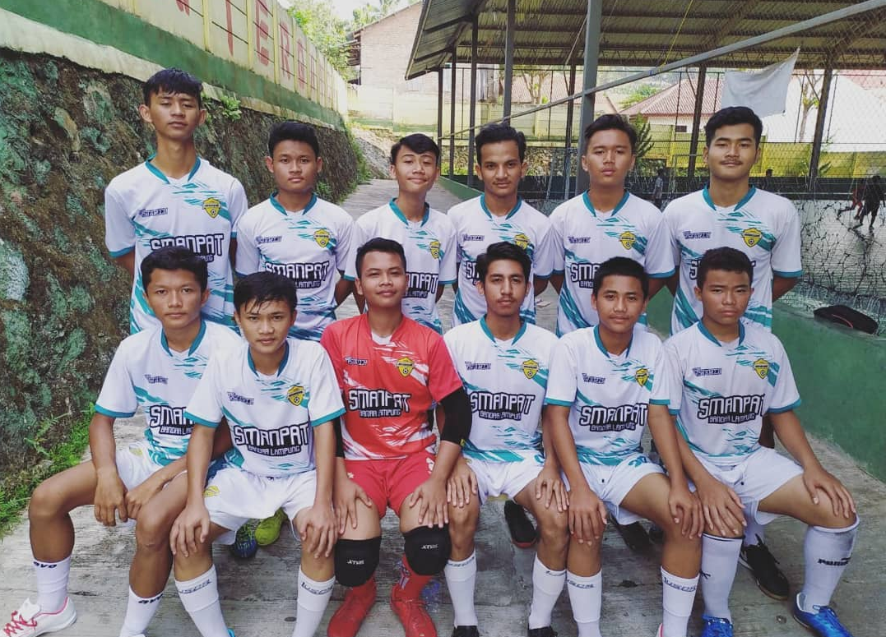
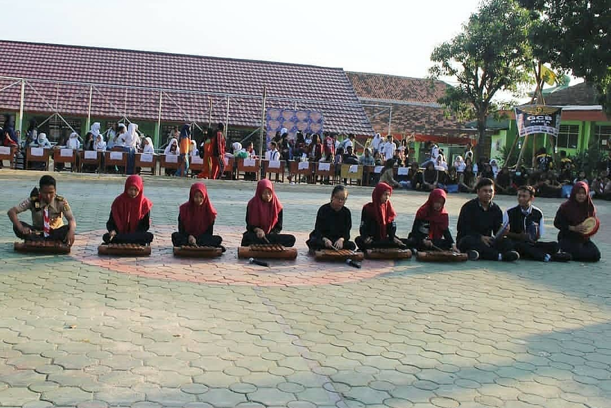
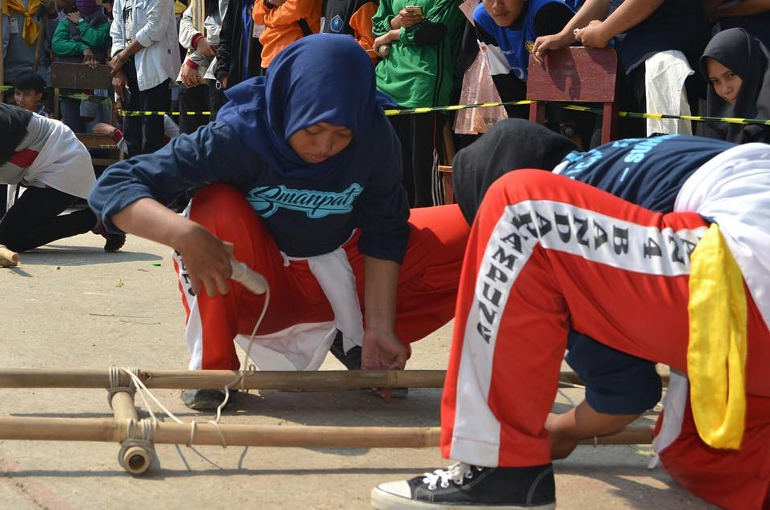

SMA Negeri (SMAN) 4 Bandar Lampung, merupakan salah satu Sekolah Menengah Atas Negeri yang ada di Provinsi Lampung, Indonesia.
Sama dengan SMA pada umumnya di Indonesia masa pendidikan sekolah di SMAN 4 Bandar Lampung ditempuh dalam waktu tiga tahun pelajaran, mulai dari Kelas X sampai Kelas XII.
Bertaqwa, disiplin, cerdas, terampil, menuju prestas
1. Menumbuhkan semangat bertaqwa kepada Tuhan Yang Maha Esa sesuai dengan ajaran agamanya.
2. Meningkatkan disiplin dalam mencapai prestasi
3. Meningkat kan mutu dalam proses belajar mengajar
4. Meningkatkan kecerdasan dan ketrampilan
5. Meningkatkan prestasi ekstrakurikuler
PASKIBRA
MERPATI PUTIH
PRAMUKA
TARI TRADISIONAL
BASKET
ROHIS
YOUTH ENGLISH CLUB
FUTSAL
BINA MUSIKAL
PALANG MERAH REMAJA